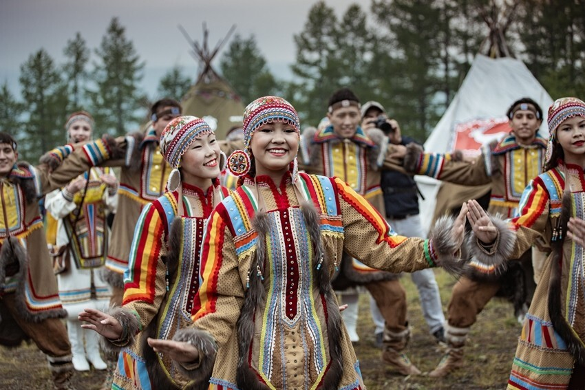
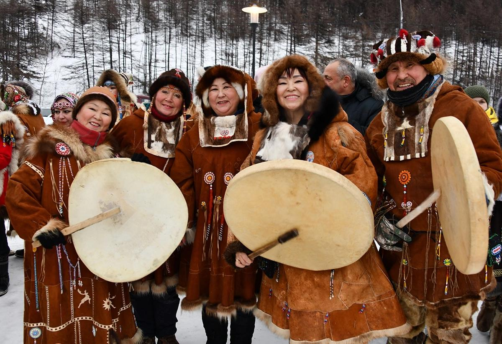
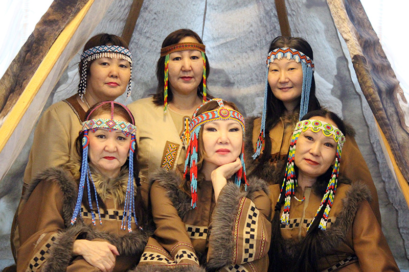

Магаданская область — многонациональный регион, где проживают представители более 100 национальностей. Преобладающее большинство населения составляют русские. Также значительно представлены другие народы, в том числе коренные малочисленные народы Севера.
Основные и коренные народы Магаданской области
Эти народы сохраняют свои культурные традиции, связанные с традиционными видами хозяйственной деятельности, такими как оленеводство и рыболовство.

Эвены
Традиционные ремесла и одежда эвенов тесно связаны с их кочевым образом жизни и суровыми условиями Севера. Они отражают глубокое понимание природы и рациональное использование природных ресурсов.
Ремесла
Оленеводство
Это ключевое занятие, определяющее весь уклад жизни. Эвены были (и остаются в некоторых регионах) единственным народом, который традиционно ездил верхом на оленях.
Обработка шкур и ровдуги
Мастерицы искусно выделывали шкуры оленей, из которых изготавливали одежду, обувь (унты или торбаса), жилища (чумы) и утварь. Ровдуга (замша из оленьей или лосиной шкуры) была основным материалом для шитья.
Художественная обработка
Эвенки славились мастерством меховой мозаики, бисерной вышивки, вышивки оленьим волосом и аппликаций. Орнаменты имели глубокий символический смысл (например, полоски, символизирующие северное сияние, или треугольники-горы) и служили оберегами.
Изготовление утвари и снаряжения
Эвены делали лодки из бересты, легкие и удобные для переноски, а также различные сумки (для инструментов, швейных принадлежностей), посуду и седла для оленей.
Одежда
Традиционная эвенская одежда отличается практичностью и приспособленностью к холодному климату, она имеет общетунгусский тип.
Материал
Основным материалом служил олений мех. Зимняя одежда обычно была глухой (например, малица, позаимствованная у ненцев, или кухлянка) и очень теплой. Летняя одежда изготавливалась из ровдуги или сукна.
Крой
Костюм состоял из кафтана прямого покроя или парки, а также нагрудника (который богато украшался у женщин бисером и металлическими бляхами в качестве оберега), штанов, меховой обуви (торбасов) и головных уборов (меховых шапок или капоров).
Декор
Одежда обильно украшалась бисером, меховой бахромой и мозаикой. Женские костюмы декорировались богаче мужских, так как считалось, что украшения-обереги защищают женщину как продолжательницу рода.
Значение ремесел в 2025 году
В современном мире (в 2025 году) традиционные эвенские ремесла имеют большое значение:
- Сохранение культурного наследия: Эти ремесла помогают сохранить уникальную идентичность и историю народа, передавая знания и навыки из поколения в поколение.
- Экологичность и устойчивость: Традиционные материалы (мех, ровдуга, дерево) являются натуральными, биоразлагаемыми и экологически чистыми, что соответствует современным трендам устойчивого развития и бережного отношения к природе.
- Инновации в дизайне: Элементы эвенского орнамента, меховой мозаики и кроя активно используются современными дизайнерами в этническом и повседневном стиле, создавая уникальные и функциональные предметы одежды и декора.
- Развитие туризма и экономики: Изготовление сувениров, национальной одежды и предметов быта ручной работы поддерживает местную экономику и привлекает туристов, интересующихся аутентичной культурой Севера.
- Функциональность: Унты и теплая меховая одежда, изготовленная по традиционным технологиям, по-прежнему являются самыми надежными и функциональными для работы и жизни в условиях Крайнего Севера.

Коряки
Коряки, коренной народ Камчатки, подразделяются на оленеводов (кочевников) и оседлых приморских жителей, и их ремесла и одежда традиционно отражали этот уклад жизни.
Ремесла
Обработка меха и кожи
Это центральное ремесло, так как олений мех и шкуры морских животных были основным материалом для всего — от одежды до жилищ и лодок. Женщины занимались выделкой шкур, используя традиционные методы.
Художественное шитье и орнаментация
Корякские мастерицы создавали сложную меховую мозаику, аппликации и вышивку бисером или оленьим волосом. Орнаменты имели символическое и ритуальное значение.
Изготовление транспортных средств
Оленеводы использовали оленьи упряжки, делали нарты и специальные седла для езды верхом на оленях. Приморские коряки были искусными строителями лодок. Они изготавливали большие кожаные байдары из шкур лахтака для морской охоты и долбленые баты из дерева для рек.
Резьба по кости и дереву
Изготавливали утварь, предметы быта и искусства, а также обереги и ритуальные предметы. Мастера, такие как А. П. Солодяков, известны своими работами по оленьему рогу и ольхе.
Плетение
Использовали травы и волокна для плетения циновок, корзин и других изделий.
Одежда
Традиционная корякская одежда была глухого, рубашечного покроя и шилась в основном из оленьего меха, отлично сохраняющего тепло в суровых условиях Севера.
Мужская одежда
Состояла из двойной меховой рубахи (кухлянки), которая надевалась через голову, и штанов из меха. Подпоясывалась кожаным поясом, к которому подвешивали нож и другие необходимые предметы.
Женская одежда
Представляла собой цельный меховой комбинезон, также двойной, который заходил за колени. Он был очень теплым и одевался через горло.
Обувь
Высокие меховые унты или торбаса, которые заправлялись за штанины комбинезона.
Головные уборы
Мужчины носили малахай — меховую шапку.
Орнамент
Одежда украшалась меховой мозаикой, часто с преобладанием белого цвета, что делало ее нарядной и служило защитой от злых духов.
Значение ремесел в 2025 году
В 2025 году традиционные корякские ремесла имеют важное значение, которое выходит за рамки простого сохранения культуры:
- Сохранение этнокультурного разнообразия: Эти ремесла являются неотъемлемой частью мирового культурного наследия. Их сохранение способствует богатству этнокультурного разнообразия цивилизации.
- Экологичность и устойчивость: В условиях растущего внимания к экологии, традиционные натуральные материалы (мех, кожа, дерево) и безотходные технологии обработки, которые использовали коряки, соответствуют принципам устойчивого развития и бережного отношения к природе.
- Прикладное искусство и современный дизайн: Уникальные орнаменты и техники меховой мозаики вдохновляют современных модельеров и художников. Изделия корякских мастеров пользуются спросом на международных выставках и ярмарках, поддерживая местную экономику и туризм.
- Функциональность в экстремальных условиях: Традиционная меховая одежда и обувь остаются непревзойденными по своим теплоизоляционным свойствам и до сих пор используются людьми, работающими и живущими в условиях Крайнего Севера.
- Передача знаний и связь поколений: Практика ремесел помогает передавать уникальные знания и навыки молодежи, поддерживая связь между поколениями и укрепляя национальную самобытность народа.

Юкагиры
Традиционные ремесла и одежда юкагиров — одного из древнейших народов Северо-Восточной Сибири — отражают их приспособленность к суровым условиям тайги и тундры, а также тесные культурные связи с соседними народами, такими как эвены и якуты.
Ремесла
Обработка шкур
Главным ремеслом была выделка оленьих, лосиных и пушных шкур. Женщины мастерили мягкую замшу – ровдугу, которая шла на изготовление летней одежды, обуви и сумок.
Художественное шитье и аппликация
Юкагирки славились умением украшать одежду и предметы быта. Использовалась меховая мозаика, вышивка подшейным волосом оленя (окрашенным в красный, черный и белый цвета), а также бисер.
Резьба по кости и дереву
Мастера изготавливали утварь, рукоятки ножей, фигурки духов-помощников и обереги.
Плетение
Из травы и волокон плели различные изделия, например, циновки и корзины.
Изготовление лодок
Лесные юкагиры делали легкие, переносные лодки-берестянки, удобные для перемещения по рекам и озерам.
Одежда
Юкагирская одежда имеет много общих черт с одеждой эвенов, но отличается некоторыми особенностями кроя и декора.
Материал
Основным материалом служил олений или лосиный мех для зимы и ровдуга или сукно для лета.
Крой
Основа костюма — распашной кафтан (типа парки или кухлянки), который носили с нагрудником. Особенностью юкагирского кафтана было наличие сзади двух клиньев по низу спинки, из-за чего соседи называли их «людьми с хвостами куропатки». Мужские кафтаны могли иметь длинный, свисающий до земли «хвост» из тюленьего меха, окрашенного в красный цвет.
Зимний комплект
В сильные морозы носили двойную одежду: нижнюю мехом внутрь, верхнюю — мехом наружу. Женщины в тундре носили короткие меховые штаны (натазники) с нагрудником, мужчины — меховые штаны.
Обувь
Высокие меховые унты (торбаза) из камуса (шкуры с голени оленя или лося), которые иногда доходили до паха.
Значение ремесел в 2025 году
В 2025 году традиционные юкагирские ремесла имеют важное значение для современного мира:
- Сохранение культурной идентичности: Ремесла являются живым языком культуры, позволяющим сохранить уникальные знания и традиции народа, передавая их следующим поколениям, что особенно важно для малочисленных народов.
- Экологичность и натуральность: Использование природных, биоразлагаемых материалов и традиционных, безотходных технологий обработки соответствует современным принципам устойчивого развития и бережного отношения к окружающей среде.
- Вдохновение для моды и дизайна: Уникальные орнаменты, техники меховой мозаики и функциональный крой традиционной одежды вдохновляют современных дизайнеров на создание новых коллекций в этническом стиле.
- Развитие этнотуризма: Изделия ручной работы — сувениры, одежда, украшения — пользуются спросом у туристов, что способствует развитию местного предпринимательства и поддержанию экономики региона.
- Функциональность: Традиционная теплая меховая одежда юкагиров остается одной из самых эффективных и надежных для использования в условиях Крайнего Севера, где современные синтетические материалы не всегда справляются с экстремальными морозами.